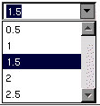

Copyright ª1997 by Apple Computer, Inc. All Rights Reserved.
p NSComboBox
Inherits From: NSTextField : NSControl : NSView : NSResponder : NSObject
Conforms To: NSObject (NSObject)
NSCoding
NSCopying
Declared In: AppKit/NSComboBox.h
Class Description
An NSComboBox is a kind of NSControl that allows you to either enter text directly (as you would with an NSTextField), or click the attached arrow at the right of the combo box and select from a displayed (“pop-up”) list of items. Use this control whenever you want the user to enter information that can be selected from a finite list of options. Note that while you can construct your NSComboBox so that users are restricted to only selecting items from the combo box's pop-up list, this isn't the combo box's normal behavior: a user can either select an item from the list, or enter text that may or may not be contained in the pop-up list.
While the pop-up list is visible, typing into the text field causes an incremental search to be performed on the list. If there's a match, the selection in the pop-up list changes to reflect the match.
The NSComboBox normally looks like this:
When you click the downward-pointing arrow at the right-hand side of the text field the pop-up list appears, like this:

If there isn't sufficient room for the pop-up list to be displayed below the text field, it's instead displayed above the text field. Selecting an item from the list, clicking anywhere outside the control, or activating another window dismisses the pop-up list.
Providing Data for the Combo Box's Pop-Up List
The NSComboBox control can be set up to populate the pop-up list either from an internal item list or from an object that you provide, called its data source. If you use a data source, your data source object can store items in any way, but it must be able to identify them by an integer index. See the NSComboBoxDataSource informal protocol specification for more information on constructing an NSComboBox data source.
NSComboBox provides a complete set of methods that allow you to add, insert, and delete items in the internal item list for combo boxes that don't use a data source.
Use setUsesDataSource: to specify whether a given combo box uses a data source or maintains an internal list of items. A combo box can only use one or the other; for instance, if you construct combo box that uses a data source and then attempt to execute an item-oriented method—such as addItemWithObjectValue:—a warning will be logged and the method will have no effect.
Interacting with the Text Field
Because NSComboBox is a type of NSControl, you typically use the methods provided by the NSControl class—such as stringValue, floatValue, or intValue—when working with the contents of the combo box's text field; see the NSControl class specification for more information on these methods. NSControl's set...Value: methods are also useful, primarily when initializing a combo box. For instance, the following excerpt shows how to “pre-select” the third item in the list of a combo box that maintains an internal item list:
[myComboBox selectItemAtIndex:2]; // List items start at index 0
[myComboBox setObjectValue:[myComboBox objectValueOfSelectedItem]];
To do the same thing for a combo box that relies upon a data source, use:
[myComboBox selectItemAtIndex:2];
[myComboBox setObjectValue:[myComboBoxDataSource comboBox:myComboBox
objectValueForItemAtIndex:[myComboBox indexOfSelectedItem]]];
Note that NSComboBox is a also a subclass of NSTextField, and thus inherits all of NSTextField's methods. NSComboBox relies heavily upon its cell class, NSComboBoxCell. NSComboBoxCell is a NSTextFieldCell subclass, which combines a text field cell with a button cell.
Method Types
Setting display attributes: - hasVerticalScroller
- intercellSpacing
- itemHeight
- numberOfVisibleItems
- setHasVerticalScroller:
- setIntercellSpacing:
- setItemHeight:
- setNumberOfVisibleItems:
Setting a data source: - dataSource
- setDataSource:
- setUsesDataSource:
- usesDataSource
Working with an internal list: - addItemsWithObjectValues:
- addItemWithObjectValue:
- insertItemWithObjectValue:atIndex:
- objectValues
- removeAllItems
- removeItemAtIndex:
- removeItemWithObjectValue:
- numberOfItems
Manipulating the displayed list: - indexOfItemWithObjectValue:
- itemObjectValueAtIndex:
- noteNumberOfItemsChanged
- reloadData
- scrollItemAtIndexToTop:
- scrollItemAtIndexToVisible:
Manipulating the selection: - deselectItemAtIndex:
- indexOfSelectedItem
- objectValueOfSelectedItem
- selectItemAtIndex:
- selectItemWithObjectValue:
Encoding a ComboBox - encodeWithCoder:
- initWithCoder:
Instance Methods
p addItemsWithObjectValues:
- (void)addItemsWithObjectValues:(id)objects
Adds multiple objects to the end of the combo box's internal item list. This method logs a warning if usesDataSource returns YES.
p addItemWithObjectValue:
- (void)addItemWithObjectValue:(id)anObject
Adds anObject to the end of the combo box's internal item list. This method logs a warning if usesDataSource returns YES.
p dataSource
- (id)dataSource
Returns the object that provides the data displayed in the receiver's pop-up list. This method logs a warning if usesDataSource returns NO. See the class description and the NSComboBoxDataSource informal protocol specification for more information on combo box data source objects.
p deselectItemAtIndex:
- (void)deselectItemAtIndex:(int)index
Deselects the pop-up list item at index if it's selected. If the selection does in fact change, this method posts an NSComboBoxSelectionDidChangeNotification to the default notification center.
See also: - indexOfSelectedItem, - numberOfItems, - selectItemAtIndex:
p encodeWithCoder:
- (void)encodeWithCoder:(NSCoder *)encoder
Encodes the receiver using encoder. If the receiver uses a data source, the data source is conditionally encoded as well.
See also: - initWithCoder:
p hasVerticalScroller
- (BOOL)hasVerticalScroller
Returns YES if the receiver will display a vertical scroller. Note that the scoller will be displayed even if the pop-up list contains fewer items than will fit in the area specified for display. Returns NO if the receiver won't display a vertical scroller.
See also: - numberOfItems, - numberOfVisibleItems
p indexOfItemWithObjectValue:
- (int)indexOfItemWithObjectValue:(id)anObject
Searches the receiver's internal item list for anObject and returns the lowest index whose corresponding value is equal to anObject. Objects are considered equal if they have the same id or if isEqual: returns YES. If none of the objects in the receiver's internal item list are equal to anObject, indexOfItemObjectValue: returns NSNotFound. This method logs a warning if usesDataSource returns YES.
See also: - selectItemWithObjectValue:
p indexOfSelectedItem
- (int)indexOfSelectedItem
Returns the index of the last item selected from the receiver's pop-up list, or -1 if no item is selected. Note that nothing is initially selected in a newly-initialized combo box.
See also: - objectValueOfSelectedItem
p initWithCoder:
- (id)initWithCoder:(NSCoder *)decoder
Initializes a newly-allocated instance from data in decoder. If the decoded instance uses a data source, initWithCoder: decodes the data source as well. Returns self.
See also: - encodeWithCoder:
p insertItemWithObjectValue:atIndex:
- (void)insertItemWithObjectValue:(id)anObject atIndex:(int)index
Inserts anObject at index in the combo box's internal item list, shifting the previous item at index—along with all following items—down one slot to make room. This method logs a warning if usesDataSource returns YES.
See also: - addItemWithObjectValue:, - numberOfItems
p intercellSpacing
- (NSSize)intercellSpacing
Returns the horizontal and vertical spacing between cells in the receiver's pop-up list. The default spacing is (3.0, 2.0).
See also: - itemHeight, - numberOfVisibleItems
p itemHeight
- (float)itemHeight
Returns the height of each item in the receiver's pop-up list. The default item height is 16.0.
See also: - intercellSpacing, - numberOfVisibleItems
p itemObjectValueAtIndex:
- (id)itemObjectValueAtIndex:(int)index
Returns the object located at index within the receiver's internal item list. If index is beyond the end of the list, an NSRangeException is raised. This method logs a warning if usesDataSource returns YES.
See also: - objectValueOfSelectedItem
p noteNumberOfItemsChanged
- (void)noteNumberOfItemsChanged
Informs the receiver that the number of items in its data source has changed, allowing the receiver to update the scrollers in its displayed pop-up list without actually reloading data into the receiver. This method is particularly useful for a data source that continually receives data in the background over a period of time, in which case the NSComboBox can remain responsive to the user while the data is received.
See the NSComboBoxDataSource informal protocol specification for information on the messages an NSComboBox sends to its data source.
See also: -- reloadData
p numberOfItems
- (int)numberOfItems
Returns the total number of items in the pop-up list.
See also: - numberOfItemsInComboBox: (NSComboBoxDataSource protocol), - numberOfVisibleItems
p numberOfVisibleItems
- (int)numberOfVisibleItems
Returns the maximum number of items visible at any one time in the pop-up list.
See also: - numberOfItems
p objectValueOfSelectedItem
- (id)objectValueOfSelectedItem
Returns the object from the receiver's internal item list corresponding to the last item selected from the pop-up list, or nil if no item is selected. Note that nothing is initially selected in a newly-initialized combo box. This method logs a warning if usesDataSource returns YES.
See also: - comboBox:objectValueForItemAtIndex: (NSComboBoxDataSource protocol), - indexOfSelectedItem
p objectValues
- (NSArray *)objectValues
Returns as an array the receiver's internal item list. This method logs a warning if usesDataSource returns YES.
p reloadData
- (void)reloadData
Marks the receiver as needing redisplay, so that it will reload the data for visible pop-up items and draw the new values.
See also: - noteNumberOfItemsChanged
p removeAllItems
- (void)removeAllItems
Removes all items from the receiver's internal item list. This method logs a warning if usesDataSource returns YES.
See also: - objectValues
p removeItemAtIndex:
- (void)removeItemAtIndex:(int)index
Removes the object at index from the receiver's internal item list and moves all items beyond index up one slot to fill the gap. The removed object receives a release message. This method raises an NSRangeException if index is beyond the end of the list, and logs a warning if usesDataSource returns YES.
p removeItemWithObjectValue:
- (void)removeItemWithObjectValue:(id)anObject
Removes all occurrences of anObject from the receiver's internal item list. Objects are considered equal if they have the same id or if isEqual: returns YES. This method logs a warning if usesDataSource returns YES.
See also: - indexOfItemWithObjectValue:
p scrollItemAtIndexToTop:
- (void)scrollItemAtIndexToTop:(int)index
Scrolls the receiver's pop-up list vertically so that the item specified by index is as close to the top as possible. The pop-up list need not be displayed at the time this method is invoked.
p scrollItemAtIndexToVisible:
- (void)scrollItemAtIndexToVisible:(int)index
Scrolls the receiver's pop-up list vertically so that the item specified by index is visible. The pop-up list need not be displayed at the time this method is invoked.
p selectItemAtIndex:
- (void)selectItemAtIndex:(int)index
Selects the pop-up list row at index. Posts NSComboBoxSelectionDidChangeNotification to the default notification center if the selection does in fact change. Note that this method does not alter the contents of the combo box's text field—see “Interacting with the Text Field” in the class description for more information.
See also: - setObjectValue: (NSControl)
p selectItemWithObjectValue:
- (void)selectItemWithObjectValue:(id)anObject
Selects the first pop-up list item that corresponds to anObject. Objects are considered equal if they have the same id or if isEqual: returns YES. Posts NSComboBoxSelectionDidChangeNotification to the default notification center if the selection does in fact change. Note that this method doesn't alter the contents of the combo box's text field—see “Interacting with the Text Field” in the class description for more information.
See also: - setObjectValue: (NSControl)
p setDataSource:
- (void)setDataSource:(id)aSource
Sets the receiver's data source to aSource. aSource should implement the appropriate methods of the NSComboBoxDataSource informal protocol. This method doesn't automatically set usesDataSource to NO, and in fact logs a warning if usesDataSource returns NO.
This method logs a warning if aSource doesn't respond to either numberOfRowsInComboBox: or comboBox:objectValueForItemAtIndex:.
See also: - setUsesDataSource:
p setHasVerticalScroller:
- (void)setHasVerticalScroller:(BOOL)flag
Determines according to flag whether the receiver displays a vertical scroller. By default, flag is YES. If flag is NO and the combo box has more list items (either in its internal item list or from its data source) than are allowed by numberOfVisibleItems, only a subset will be displayed. NSComboBox's scroll... methods can be used to position this subset within the pop-up list.
Note that if flag is YES, a scroller will be displayed even if the combo box has fewer list items than are allowed by numberOfVisibleItems.
See also: - numberOfItems, - scrollItemAtIndexToTop:, - scrollItemAtIndexToVisible:
p setIntercellSpacing:
- (void)setIntercellSpacing:(NSSize)aSize
Sets the width and height between pop-up list items to those in aSize. The default intercell spacing is (3.0, 2.0).
See also: - setItemHeight:, - setNumberOfVisibleItems:
p setItemHeight:
- (void)setItemHeight:(float)itemHeight
Sets the height for items to itemHeight.
See also: - setIntercellSpacing:, - setNumberOfVisibleItems:
p setNumberOfVisibleItems:
- (void)setNumberOfVisibleItems:(int)visibleItems
Sets the maximum number of items that will be visible at one time in the receiver's pop-up list to visibleItems.
See also: - numberOfItems, - setItemHeight:, - setIntercellSpacing:
p setUsesDataSource:
- (void)setUsesDataSource:(BOOL)flag
Sets according to flag whether the receiver uses an external data source (specified by setDataSource:) to populate the receiver's pop-up list.
p usesDataSource
- (BOOL)usesDataSource
Returns YES if the receiver uses an external data source to populate the receiver's pop-up list, NO if it uses an internal item list.
See also: - dataSource
Notifications
NSComboBoxSelectionDidChangeNotification
Posted after the NSComboBox's pop-up list selection changes. The notification contains:
Notification Object The NSComboBox whose selection changed.
Userinfo None
NSComboBoxCellSelectionIsChangingNotification
Posted whenever the NSComboBox's pop-up list selection is changing. The notification contains:
Notification Object The NSComboBox whose selection is changing.
Userinfo None
NSComboBoxCellWillPopUpNotification
Posted whenever the NSComboBox's pop-up list is going to be displayed. The notification contains:
Notification Object The NSComboBox whose popup window will be displayed.
Userinfo None
NSComboBoxCellWillDismissNotification
Posted whenever the NSComboBox's pop-up list is about to be dismissed. The notification contains:
Notification Object The NSComboBox whose pop-up list will be dismissed.
Userinfo None